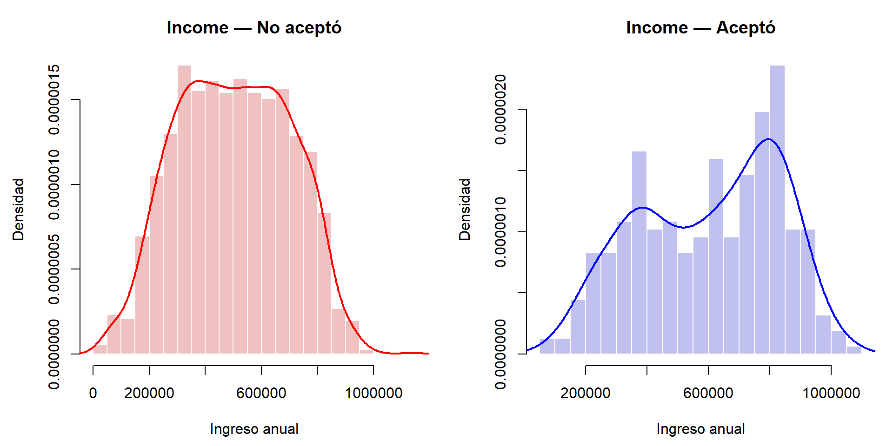
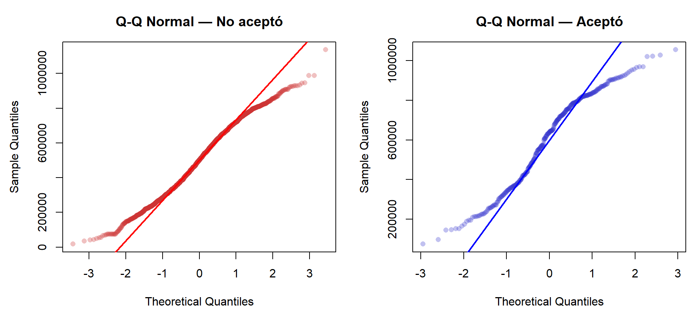
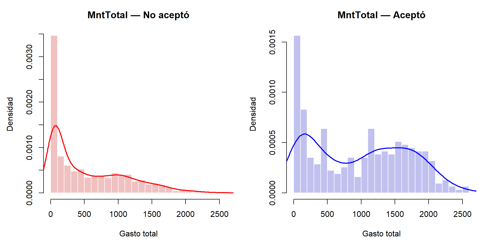
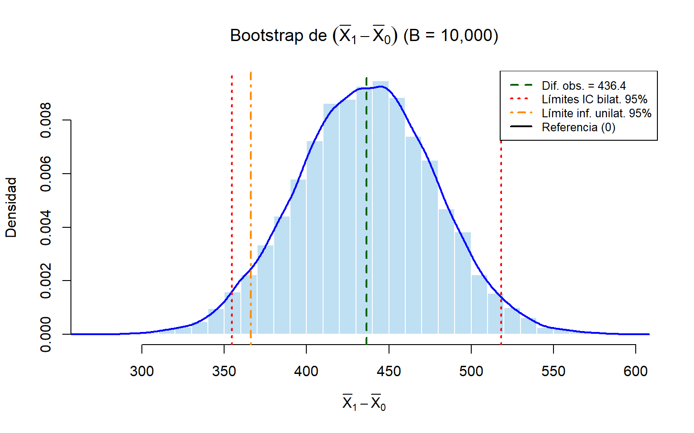
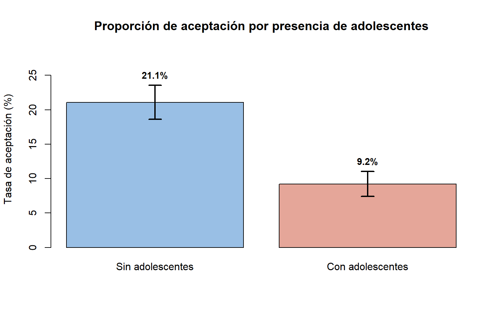

6 Prueba de hipótesis e intervalo de confianza
6.1 Problema 6
Teniendo en cuenta el contexto y los datos utilizados en el informe estadístico desarrollado en la Actividad 1, formulamos tres preguntas de investigación relevantes. Para cada pregunta, realizamos el análisis correspondiente utilizando pruebas de hipótesis e intervalos de confianza. Además, verificamos el cumplimiento de los supuestos necesarios para garantizar la validez de los procedimientos estadísticos aplicados.
6.1.1 Contexto: Informe descriptivo de la Actividad 1
En la Actividad 1 se desarrolló un análisis exploratorio y descriptivo sobre datos provenientes de una campaña piloto de marketing directo de una empresa que busca comercializar un nuevo dispositivo entre sus clientes existentes. El objetivo era identificar patrones y rasgos distintivos entre los clientes que aceptaron la oferta y aquellos que no lo hicieron, sentando las bases para la construcción de un modelo predictivo de respuesta.
La base de datos original contenía \(2220\) registros con información
sociodemográfica (edad, nivel educativo, estado civil, composición del
hogar, ingreso), comportamiento de compra (gasto por categoría de
producto, número de compras por canal, visitas web) y respuesta a
campañas de marketing previas y a la campaña piloto (variable
Response).
El proceso de depuración de la Actividad 1 comprendió las siguientes etapas:
- Eliminación de duplicados: Se identificaron y removieron \(179\) registros duplicados (\(8.06\%\)), reduciendo el dataset a \(n = 2041\).
- Corrección de inconsistencias: Se corrigieron \(6\) errores de
codificación en
marital_Divorced, se descartaron \(2\) registros con edades biológicamente imposibles (\(240\) años) y se recalcularon \(3\) valores negativos enMntRegularProds. - Imputación de datos faltantes: Se imputaron los valores
faltantes de
Income(\(68\) valores, \(3.33\%\)) yMntWines(\(20\) valores, \(0.98\%\)) mediante el método CART, verificando la preservación de distribuciones y correlaciones.
El dataset final quedó conformado por \(n = 2039\) observaciones limpias y completas. Los principales hallazgos del análisis exploratorio fueron:
- Las variables económicas (ingreso anual y gasto total acumulado) presentan la mayor capacidad discriminante entre los grupos de respuesta.
- Las compras por catálogo constituyen el canal con mayor poder diferenciador.
- Las variables demográficas clásicas (edad) no discriminan entre grupos, pero el nivel educativo, estado civil y composición del hogar sí presentan asociaciones significativas.
- La presencia de dependientes en el hogar se asocia con menor proporción de aceptación.
Las tres preguntas de investigación que se formulan a continuación se derivan directamente de estos hallazgos y se abordan con las herramientas de inferencia estadística desarrolladas en los Problemas 1 a 5 de esta actividad.
6.1.2 Carga y preparación de los datos
La Tabla 6.1 presenta un resumen del dataset utilizado.
| Grupo | n | Porcentaje |
|---|---|---|
| No aceptó (Response = 0) | 1726 | 84.6% |
| Aceptó (Response = 1) | 313 | 15.4% |
| Total | 2039 | 100% |
6.2 Pregunta 1: ¿El ingreso medio anual difiere entre quienes aceptaron y quienes no aceptaron la campaña?
6.2.1 Planteamiento formal
Sea \(\mu_1\) la media poblacional de Income para el grupo que aceptó la
campaña (\(\text{Response} = 1\)) y \(\mu_0\) la media para el grupo que no
aceptó (\(\text{Response} = 0\)). Se desea contrastar:
\[H_0: \mu_1 = \mu_0 \qquad \text{vs} \qquad H_1: \mu_1 \neq \mu_0\]
al nivel de significancia \(\alpha = 0.05\).
6.2.2 Verificación de supuestos
6.2.2.1 Independencia
Las muestras corresponden a clientes distintos, seleccionados aleatoriamente durante la campaña piloto. Las observaciones dentro de cada grupo y entre grupos son independientes.
6.2.2.2 Normalidad
Dado que \(n_0 = 1726\) y \(n_1 = 313\), ambos tamaños son suficientemente grandes para invocar el Teorema del Límite Central (TLC). Según este resultado (véase Casella & Berger, Statistical Inference, 2nd ed., Sec. 5.5), la distribución de la media muestral \(\bar{X} \xrightarrow{d} N(\mu, \sigma^2/n)\) cuando \(n \to \infty\), independientemente de la distribución poblacional, siempre que la varianza sea finita.
No obstante, realizamos una verificación gráfica y formal. Las Figuras 6.1 y 6.2 presentan los histogramas y gráficos Q-Q de cada grupo.

Figure 6.1: Histogramas de Income por grupo de respuesta

Figure 6.2: Q-Q plots de Income por grupo
Se aplican las pruebas de Shapiro-Wilk y Lilliefors
(Kolmogorov-Smirnov corregido) a cada grupo. En R, la función
shapiro.test() admite muestras de tamaño \(3 \leq n \leq 5000\); dado
que ambos grupos (\(n_0 = 1726\) y \(n_1 = 313\)) están dentro de este
rango, la prueba es aplicable. La Tabla
6.2 resume los resultados.
| Grupo | Prueba | Estadístico | p-valor | Decisión (\(\alpha = 0.05\)) |
|---|---|---|---|---|
| No aceptó | Shapiro-Wilk | 0.9864 | 0 | Rechaza \(H_0\) |
| No aceptó | Lilliefors | 0.0437 | 0 | Rechaza \(H_0\) |
| Aceptó | Shapiro-Wilk | 0.9585 | 0 | Rechaza \(H_0\) |
| Aceptó | Lilliefors | 0.0967 | 0 | Rechaza \(H_0\) |
Nota sobre la interpretación con muestras grandes: Con tamaños muestrales del orden de \(n = 1726\), las pruebas de normalidad poseen una potencia muy elevada y pueden rechazar \(H_0\) ante desviaciones mínimas de la normalidad que carecen de relevancia práctica. En estos casos, la evaluación visual (histogramas y Q-Q plots) cobra mayor importancia. Los gráficos de las Figuras 6.1 y 6.2 muestran distribuciones aproximadamente simétricas y unimodales. Además, dado el tamaño muestral, el TLC garantiza la validez asintótica de la prueba \(t\), independientemente de la distribución subyacente (siempre que la varianza sea finita).
6.2.2.3 Homogeneidad de varianzas
Se aplica la prueba \(F\) de Fisher:
\[H_0: \sigma_0^2 = \sigma_1^2 \qquad \text{vs} \qquad H_1: \sigma_0^2 \neq \sigma_1^2\]
Nota: La prueba \(F\) de Fisher es sensible a desviaciones de la normalidad (véase Montgomery & Runger, Probabilidad y Estadística Aplicadas a la Ingeniería, 6ta ed., Sec. 10.5). Dado que con muestras grandes los tests de normalidad pueden rechazar \(H_0\) ante desviaciones mínimas, complementamos la prueba \(F\) con la prueba de Levene, que es robusta a no-normalidad ya que opera sobre las desviaciones absolutas respecto a la mediana grupal.
La Tabla 6.3 presenta los resultados de ambas pruebas.
| Prueba | Estadístico | p-valor | Decisión (\(\alpha = 0.05\)) | |
|---|---|---|---|---|
| F | F de Fisher | 0.7482 | 0.0005 | Rechaza \(H_0\): varianzas desiguales |
| Levene | 20.0299 | 0.0000 | Rechaza \(H_0\): varianzas desiguales |
Dado el resultado de la Tabla 6.3, se emplea la prueba \(t\) de Welch, que no asume homocedasticidad.
6.2.3 Prueba de hipótesis: \(t\) de Welch
El estadístico de prueba es:
\[t = \frac{\bar{X}_1 - \bar{X}_0}{\sqrt{\frac{S_1^2}{n_1} + \frac{S_0^2}{n_0}}}\]
con grados de libertad estimados mediante la aproximación de Satterthwaite (véase Montgomery & Runger, Probabilidad y Estadística Aplicadas a la Ingeniería, 6ta ed., Cap. 10).
La Tabla 6.4 presenta los estadísticos descriptivos por grupo y la Tabla 6.5 los resultados de la prueba.
| Grupo | \(n\) | \(\bar{X}\) | \(S\) | Mediana |
|---|---|---|---|---|
| No aceptó (\(\text{Response}=0\)) | 1726 | 501831.9 | 198439.5 | 501385 |
| Aceptó (\(\text{Response}=1\)) | 313 | 601688.6 | 229412.6 | 639980 |
| \(t\) | gl | p-valor | IC 95% inf. | IC 95% sup. | Decisión (\(\alpha=0.05\)) | |
|---|---|---|---|---|---|---|
| t | 7.2261 | 401.07 | 0.000000000002526 | 72690.1 | 127023.2 | Rechaza \(H_0\) |
6.2.4 Intervalo de confianza al 95% para \(\mu_1 - \mu_0\)
La prueba \(t\) de Welch proporciona simultáneamente el intervalo de confianza para la diferencia de medias:
\[(\bar{X}_1 - \bar{X}_0) \pm t_{\alpha/2,\;\nu} \cdot \sqrt{\frac{S_1^2}{n_1} + \frac{S_0^2}{n_0}}\]
Según la Tabla 6.5, el IC al 95% para \(\mu_1 - \mu_0\) es \([72690.1,\; 127023.18]\).
6.2.6 Interpretación
Los clientes que aceptaron la campaña presentan un ingreso medio anual significativamente superior al de quienes no la aceptaron, como muestra la Figura 6.3. La diferencia es estadísticamente significativa al nivel \(\alpha = 0.05\) (Tabla 6.5). El intervalo de confianza al 95% para la diferencia de medias no contiene el cero, reforzando la conclusión. Desde el punto de vista práctico, el ingreso constituye un factor relevante para la segmentación de clientes en futuras campañas.
6.3 Pregunta 2: ¿El gasto total medio en productos es significativamente mayor en quienes aceptaron la campaña?
6.3.1 Planteamiento formal
Sea \(\mu_1\) la media poblacional de MntTotal para
\(\text{Response}=1\) y \(\mu_0\) para \(\text{Response}=0\). Dado que el
análisis exploratorio de la Actividad 1 sugiere que el grupo que aceptó
gasta más, formulamos una prueba unilateral:
\[H_0: \mu_1 \leq \mu_0 \qquad \text{vs} \qquad H_1: \mu_1 > \mu_0\]
al nivel \(\alpha = 0.05\).
6.3.2 Verificación de supuestos
6.3.2.1 Normalidad
La Figura 6.4 presenta los histogramas de
MntTotal por grupo.

Figure 6.4: Histogramas de MntTotal por grupo de respuesta
Se evalúa la asimetría y se aplican pruebas formales de normalidad. La Tabla 6.6 resume los resultados.
| Grupo | Prueba | Estadístico | p-valor | Resultado |
|---|---|---|---|---|
| No aceptó | Asimetría (skewness) | 0.9534 | — | Asimetría moderada |
| No aceptó | Shapiro-Wilk | 0.8549 | 0 | Rechaza \(H_0\) |
| No aceptó | Lilliefors | 0.1667 | 0 | Rechaza \(H_0\) |
| Aceptó | Asimetría (skewness) | 0.1325 | — | Asimetría moderada |
| Aceptó | Shapiro-Wilk | 0.9247 | 0 | Rechaza \(H_0\) |
| Aceptó | Lilliefors | 0.1164 | 0 | Rechaza \(H_0\) |
La Figura 6.4 y la Tabla
6.6 confirman que MntTotal presenta
asimetría positiva marcada y rechaza normalidad en ambos grupos.
Esto motiva el uso de tres enfoques complementarios:
- Prueba no paramétrica de Mann-Whitney-Wilcoxon (no requiere normalidad).
- Prueba \(t\) de Welch (válida asintóticamente por el TLC dado el tamaño muestral grande).
- Intervalo de confianza Bootstrap percentil para la diferencia de medias (libre de distribución).
6.3.3 Prueba no paramétrica: Mann-Whitney-Wilcoxon
La prueba de Mann-Whitney-Wilcoxon contrasta si una distribución tiende a producir valores mayores que la otra, es decir, evalúa la dominancia estocástica: \(H_0: P(X_1 > X_0) = 0.5\) vs. \(H_1: P(X_1 > X_0) > 0.5\). No requiere el supuesto de normalidad (véase Hollander, Wolfe & Chicken, Nonparametric Statistical Methods, 3rd ed., Cap. 4).
Es importante señalar que la hipótesis de Mann-Whitney es sobre
dominancia estocástica, no directamente sobre medias. La equivalencia
entre ambas interpretaciones se cumple estrictamente solo cuando las
distribuciones de los dos grupos difieren únicamente en localización
(misma forma, desplazadas). Dado que MntTotal presenta asimetrías y
dispersiones distintas entre grupos (como muestran la Tabla
6.6 y la Tabla 6.9),
las distribuciones difieren tanto en localización como en forma. Por esta
razón, la prueba de Mann-Whitney se complementa con la prueba \(t\) de
Welch (que sí contrasta medias directamente, válida por el TLC) y con el
intervalo Bootstrap, para obtener una conclusión robusta.
La Tabla 6.7 presenta los resultados.
| Estadístico \(W\) | p-valor | Decisión (\(\alpha=0.05\)) | |
|---|---|---|---|
| W | 373,217.5 | < 0.00000000000000022 | Rechaza \(H_0\) |
6.3.4 Tamaño del efecto: Correlación biserial de rango
Para cuantificar la magnitud de la diferencia se calcula la correlación biserial de rango \(r_{rb}\), definida como:
\[r_{rb} = \frac{2U}{n_1 \cdot n_0} - 1\]
donde \(U\) es el estadístico de Mann-Whitney. Es importante notar que en
R la función wilcox.test() devuelve \(W\) (la suma de rangos de
Wilcoxon), no \(U\). La conversión es:
\[U = W - \frac{n_1(n_1 + 1)}{2}\]
donde \(n_1\) es el tamaño del primer grupo pasado a la función (véase Hollander, Wolfe & Chicken, Nonparametric Statistical Methods, 3rd ed., Cap. 4). Umbrales interpretativos: \(|r| < 0.1\) (despreciable), \(0.1 \leq |r| < 0.3\) (pequeño), \(0.3 \leq |r| < 0.5\) (moderado), \(|r| \geq 0.5\) (grande).
| \(W\) (Wilcoxon) | \(U\) (Mann-Whitney) | \(r_{rb}\) | Magnitud | |
|---|---|---|---|---|
| W | 373,217.5 | 324,076.5 | 0.1998 | Pequeño |
6.3.5 Prueba \(t\) de Welch (confirmación asintótica)
Aunque la normalidad no se cumple, el TLC justifica el uso de la prueba \(t\) con muestras de este tamaño como verificación cruzada. La Tabla 6.9 presenta los descriptivos y la Tabla 6.10 los resultados.
| Grupo | \(n\) | \(\bar{X}\) | \(S\) | Mediana |
|---|---|---|---|---|
| No aceptó | 1726 | 539.93 | 552.60 | 316.5 |
| Aceptó | 313 | 976.37 | 709.48 | 1053.0 |
| \(t\) | gl | p-valor | IC 95% lím. inf. | Decisión (\(\alpha=0.05\)) | |
|---|---|---|---|---|---|
| t | 10.3298 | 383.59 | < 0.00000000000000022 | 366.78 | Rechaza \(H_0\) |
6.3.6 Intervalo de confianza Bootstrap para \(\mu_1 - \mu_0\)
Dado que la distribución de MntTotal es fuertemente asimétrica, se
construye un intervalo de confianza Bootstrap percentil, que no
requiere normalidad (Efron & Tibshirani, An Introduction to the
Bootstrap, Chapman & Hall, 1993). Dado que la hipótesis es unilateral
(\(H_1: \mu_1 > \mu_0\)), se calcula tanto el intervalo bilateral al 95%
como el límite inferior unilateral al 95% (\(Q_{0.05}\)), que es coherente
con el planteamiento de la prueba. La Tabla
6.11 presenta los resultados.
| \(\bar{X}_1 - \bar{X}_0\) obs. | Media bootstrap | Sesgo | IC bilat. 95% inf. | IC bilat. 95% sup. | IC unilat. 95% inf. | |
|---|---|---|---|---|---|---|
| 2.5% | 436.44 | 436.12 | -0.3169 | 354.63 | 518.19 | 366.23 |
La Figura 6.5 muestra la distribución bootstrap de la diferencia de medias.

Figure 6.5: Distribución bootstrap de la diferencia de medias de MntTotal
6.3.7 Comparación de resultados
La Tabla 6.12 compara los tres métodos empleados.
| Método | p-valor | IC 95% | Decisión |
|---|---|---|---|
| Mann-Whitney-Wilcoxon | < 0.00000000000000022 | — | Rechaza \(H_0\) |
| t de Welch (asintótico) | < 0.00000000000000022 | [366.78, \(+\infty\)) | Rechaza \(H_0\) |
| Bootstrap Percentil (unilat.) | — | [366.23, \(+\infty\)) | Significativo |
6.3.8 Interpretación
Los tres métodos convergen en la misma conclusión: el gasto total medio de los clientes que aceptaron la campaña es significativamente mayor que el de quienes no la aceptaron (Tabla 6.12). La prueba no paramétrica confirma la dominancia estocástica del grupo que aceptó (valores sistemáticamente mayores), y la prueba \(t\) de Welch —que sí contrasta medias directamente, válida por el TLC— confirma que la diferencia de medias es estadísticamente significativa. El intervalo Bootstrap unilateral al 95% tiene un límite inferior mayor que cero (Tabla 6.11 y Figura 6.5), y el tamaño del efecto (Tabla 6.8) indica una diferencia de magnitud práctica relevante.
Este resultado es coherente con los hallazgos de la Actividad 1, donde
MntTotal fue identificada como la variable con mayor poder
discriminante entre ambos grupos de respuesta.
6.4 Pregunta 3: ¿La proporción de aceptación de la campaña difiere entre clientes con y sin adolescentes en el hogar?
6.4.1 Planteamiento formal
Definimos dos poblaciones según la presencia de adolescentes:
- Grupo A: clientes sin adolescentes (\(\text{Teenhome} = 0\)).
- Grupo B: clientes con al menos un adolescente (\(\text{Teenhome} \geq 1\)).
Sea \(p_A\) la proporción poblacional de aceptación en el Grupo A y \(p_B\) en el Grupo B. Las hipótesis son:
\[H_0: p_A = p_B \qquad \text{vs} \qquad H_1: p_A \neq p_B\]
al nivel \(\alpha = 0.05\).
6.4.2 Preparación de los datos
La Tabla 6.13 presenta la tabla de contingencia y las proporciones de aceptación.
| Grupo | No aceptó | Aceptó | Total | \(\hat{p}\) (aceptación) |
|---|---|---|---|---|
| Sin adolescentes | 831 | 222 | 1053 | 21.08% |
| Con adolescentes | 895 | 91 | 986 | 9.23% |
| Total | 1726 | 313 | 2039 | 15.35% |
6.4.3 Verificación de supuestos
La prueba de dos proporciones basada en la aproximación normal requiere que los conteos esperados bajo \(H_0\) sean suficientemente grandes:
\[n_A \hat{p}_0 \geq 5, \quad n_A(1-\hat{p}_0) \geq 5, \quad n_B \hat{p}_0 \geq 5, \quad n_B(1-\hat{p}_0) \geq 5\]
donde \(\hat{p}_0 = \frac{x_A + x_B}{n_A + n_B}\) es la proporción combinada bajo \(H_0\). La Tabla 6.14 verifica estas condiciones.
| Condición | Valor | ¿Cumple? |
|---|---|---|
| \(n_A \times \hat{p}_0\) | 161.6 | Sí (\(\geq 5\)) |
| \(n_A \times (1 - \hat{p}_0)\) | 891.4 | Sí (\(\geq 5\)) |
| \(n_B \times \hat{p}_0\) | 151.4 | Sí (\(\geq 5\)) |
| \(n_B \times (1 - \hat{p}_0)\) | 834.6 | Sí (\(\geq 5\)) |
Todos los conteos esperados superan \(5\) (Tabla 6.14). La aproximación normal es válida.
6.4.4 Prueba de dos proporciones (\(z\)-test)
El estadístico de prueba es:
\[z = \frac{\hat{p}_A - \hat{p}_B}{\sqrt{\hat{p}_0(1 - \hat{p}_0)\left(\frac{1}{n_A} + \frac{1}{n_B}\right)}}\]
(véase Wackerly, Mendenhall & Scheaffer, Estadística Matemática con Aplicaciones, 7ma ed., Cap. 10). La Tabla 6.15 presenta los resultados.
| \(\chi^2\) | \(z\) | p-valor | IC 95% inf. | IC 95% sup. | Decisión (\(\alpha=0.05\)) | |
|---|---|---|---|---|---|---|
| X-squared | 55.0585 | 7.4201 | 0.000000000000117 | 0.088 | 0.1491 | Rechaza \(H_0\) |
6.4.5 Intervalo de confianza al 95% para \(p_A - p_B\)
El intervalo de Wald para la diferencia de proporciones es:
\[(\hat{p}_A - \hat{p}_B) \pm z_{\alpha/2} \sqrt{\frac{\hat{p}_A(1 - \hat{p}_A)}{n_A} + \frac{\hat{p}_B(1 - \hat{p}_B)}{n_B}}\]
La Tabla 6.16 compara los intervalos obtenidos por los métodos de Wilson y Wald.
| Método | \(\hat{p}_A - \hat{p}_B\) | IC 95% inf. | IC 95% sup. | ¿Contiene 0? |
|---|---|---|---|---|
| Wilson (prop.test) | 0.1185 | 0.088 | 0.1491 | No |
| Wald | 0.1185 | 0.088 | 0.1491 | No |
6.4.6 Confirmación: prueba \(\chi^2\) de independencia
Como verificación complementaria, se aplica la prueba Chi-cuadrado de independencia con la medida \(V\) de Cramér como tamaño del efecto:
\[V = \sqrt{\frac{\chi^2}{n \cdot (\min(r, c) - 1)}}\]
La Tabla 6.17 presenta los resultados.
| \(\chi^2\) | gl | p-valor | \(V\) de Cramér | Magnitud | |
|---|---|---|---|---|---|
| X-squared | 55.0585 | 1 | 0.000000000000117 | 0.1643 | Pequeño |
6.4.7 Visualización

Figure 6.6: Proporción de aceptación e IC 95% según presencia de adolescentes
6.4.8 Interpretación
La proporción de clientes que aceptaron la campaña es significativamente mayor entre quienes no tienen adolescentes en el hogar, como muestran la Tabla 6.15 y la Figura 6.6. La diferencia es estadísticamente significativa al nivel \(\alpha = 0.05\). Los intervalos de confianza al 95% para \(p_A - p_B\) (Tabla 6.16) no contienen el cero, y la prueba \(\chi^2\) (Tabla 6.17) confirma la asociación.
Este resultado es coherente con los hallazgos de la Actividad 1, donde se observó que la presencia de dependientes en el hogar se asocia con menor disposición a aceptar nuevos productos, posiblemente por restricciones presupuestarias o diferencias en prioridades de consumo.
6.5 Resumen comparativo de las tres preguntas
La Tabla 6.18 resume los resultados de las tres pruebas realizadas.
| Pregunta | Prueba utilizada | Supuestos verificados | Decisión (\(\alpha = 0.05\)) |
|---|---|---|---|
| 1. Diferencia de ingreso medio | t de Welch (bilateral) | TLC + Shapiro-Wilk + prueba F + Levene | Rechaza \(H_0\) |
| 2. Gasto total mayor en grupo Aceptó | Mann-Whitney + t Welch + Bootstrap (unilateral) | Independencia + dominancia estocástica (MW) + TLC (t Welch) | Rechaza \(H_0\) |
| 3. Diferencia de proporción de aceptación | z-test de dos proporciones | Conteos esperados \(\geq 5\) | Rechaza \(H_0\) |
Las tres preguntas de investigación han sido resueltas mediante pruebas de hipótesis apropiadas, con verificación explícita de supuestos en cada caso. Los intervalos de confianza complementan la información del \(p\)-valor al proporcionar la magnitud y dirección de las diferencias estimadas. Los resultados son coherentes con el análisis exploratorio de la Actividad 1 y refuerzan las siguientes conclusiones:
El ingreso anual es significativamente mayor en el grupo que aceptó la campaña, lo que confirma la capacidad económica como factor asociado a la receptividad comercial.
El gasto total acumulado es significativamente superior en quienes aceptaron, con un tamaño del efecto moderado a grande. Esto identifica al gasto histórico como el principal indicador conductual de respuesta.
La composición del hogar (presencia de adolescentes) se asocia significativamente con la tasa de aceptación, con menor receptividad entre hogares con adolescentes.
Estos hallazgos proporcionan criterios objetivos para la segmentación de clientes en futuras campañas de marketing directo.